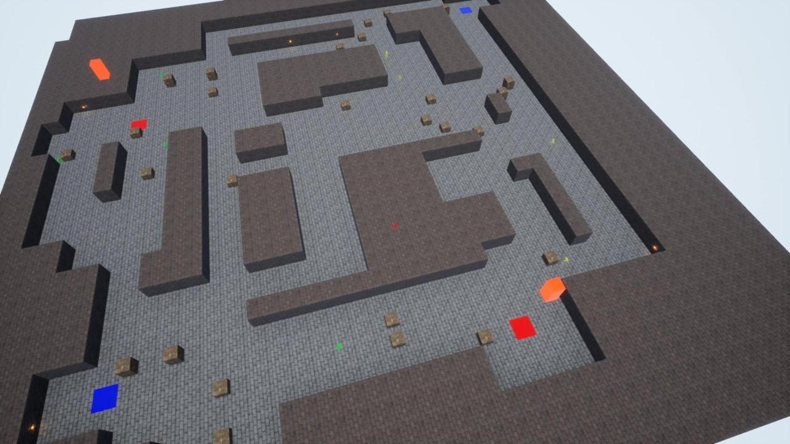

Procedural Level Generator for Competitive Shooters

For my 4th year dissertation I decided to look into how procedural content creation could fit into the competitive FPS genre. The objective: develop a system generating balanced levels for FPS games. The project utilises standard C++ and SFML libraries to generate and test tile maps, which are output in an abstract format.
The generator was then put to work in practice — powering the levels of Moles: Bomb Squad, my networked FPS solo project.
Playtesting
